Yes, for the models that need it. Across 48 real build and conversion jobs, Haiku and Sonnet shipped 29 measured RTL defects without the skill and 7 with it. Five of those seven came from two of the skill's own rules; both are corrected in v0.7.
Each job was given to a fresh agent as a client would write it, in Saudi Arabic. The agent worked in its own copy of the project and could build it but not start a dev server. The only difference between conditions was one line asking the agent to read the skill first. Opus and Fable were left out: earlier rounds showed they pass these checks without the skill.
| Task | Job | Starting point | Runs |
|---|---|---|---|
| t4 | Arabic landing page: phone, email, prices, slider, FAQ | empty React + Tailwind + shadcn starter | 8 |
| t5 | Arabic sign-up form: phone, email, password with eye toggle, city search, price | same starter | 8 |
| t7 | Arabic orders dashboard: table, order numbers, phones, dates, times, tabs, pagination, search, toast | same starter | 8 |
| t1 | Convert a real English Lovable SaaS site to Arabic | drewsephski/Hyper.AI-SaaS-Boilerplate | 8 |
| t3 | Fix a real Arabic Lovable site with known defects | AbdelqaderSafi12/book-culture-hub | 8 |
| t6 | Add Arabic with a language switch, Arabic as default | yashgondalia/lingofun-academy-diya | 8 |
Each task: Haiku × 2 and Sonnet × 2 per condition. Baseline runs from earlier rounds with the identical prompt and project were reused; 30 runs were new. Every run was graded by the same script on the rendered page in Chromium at 1440 px and 390 px, after typing realistic values into every field (a spaced Saudi phone number, a long email, a 25-character password, a long Arabic name).
Failures / runs where the check applied. A check applies only when the page has the thing it checks: a phone number, a field with an icon, a directional arrow.
| What the user sees | Skill rule | No skill | With skill |
|---|---|---|---|
| Arabic text laid out left-to-right inside the page (component or field forced LTR) | 1, 4 | 9 / 24 | 3 / 24 |
| A range (opening hours) forced left-to-right, so its start sits on the left | 3 | 2 / 3 | 2 / 3 |
| Arabic drawn in a font nobody chose (system fallback) | 2 | 5 / 24 | 1 / 24 |
| Direction set on an inner wrapper, not the page root | 1 | 3 / 24 | 0 / 24 |
| Phone number drawn reversed in text | 3 | 2 / 11 | 0 / 12 |
| Typed text runs under an icon inside a field | 6 | 2 / 8 | 1 / 8 |
| Phone number typed into a field shown reversed | 5 | 1 / 3 | 0 / 5 |
| Arrow points backwards | 7 | 1 / 15 | 0 / 20 |
| Italic on Arabic | 9 | 1 / 24 | 0 / 24 |
| English left in the interface | 8 | 1 / 24 | 0 / 24 |
| Page crashes on load (blank) | – | 1 / 24 | 0 / 24 |
| Language switch does not change language and direction | 1 | 1 / 4 | 0 / 4 |
| Letter-spacing on Arabic · punctuation inside an LTR value · Arabic phrase forced LTR · single time or date drawn out of order · left-aligned Arabic · sideways scroll on mobile | 3, 9 | 0 | 0 |
Fixing an existing broken Arabic site (t3) came out clean in all 8 runs with or without the skill: both models found the missing Arabic font, the letter-spacing, the English slider labels and the reversed phone numbers on their own. The skill adds nothing measurable to that job.
Each pair is cropped from the graded build of two runs of the same task and model. Captions name the run.
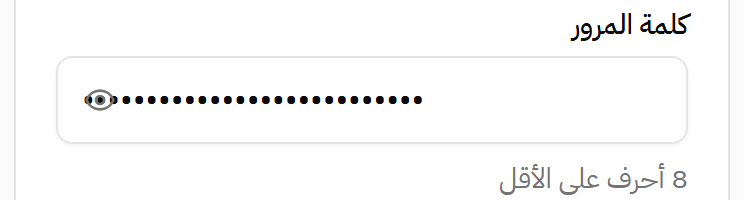
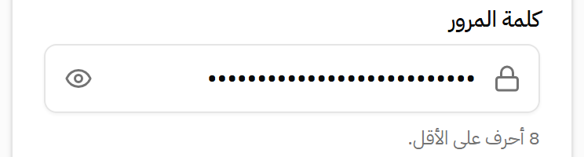
The field is correctly left-to-right, so its own "end" is the right side and its padding lands there, while the button is placed by the right-to-left layout around it and lands on the left. Rule 6: reserve the space on the side where the icon actually is.
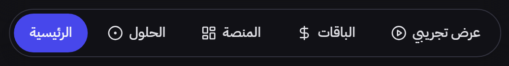
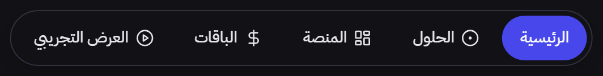
The nav is a component from a UI kit that keeps its own direction setting, left-to-right by default, so الرئيسية (Home) ends up at the left end of an Arabic page and arrow keys run backwards. Rule 1: set the kit's own direction too. The skill text names no framework; agents found the right setting from that general wording.
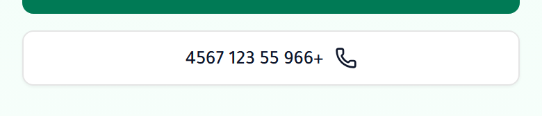
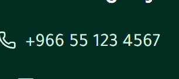
In the Unicode bidi algorithm, digits in a right-to-left context lose their grouping across spaces, so
+966 55 123 4567 is drawn 4567 123 55 966+, even alone on a button. The same thing happened in
Chrome, Firefox and Safari's engine. Rule 3: isolate every phone number, email and code made only of Latin
characters and digits.
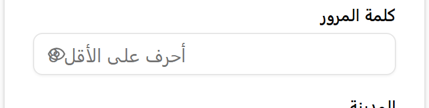
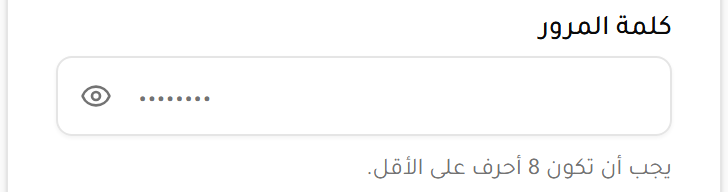
Arabic inside a left-to-right element is aligned to the wrong side and its final punctuation is drawn at the start of the line. Rule 4: in left-to-right fields, use the example value as the placeholder and put the Arabic hint in the label or helper text.
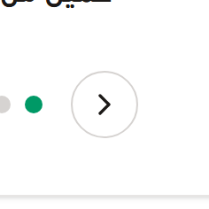
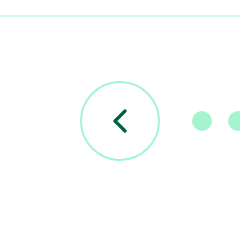
In Arabic, "next" and "forward" point left. Rule 7 sets the direction the arrow must finally point and warns against mirroring an icon that was already chosen for RTL.
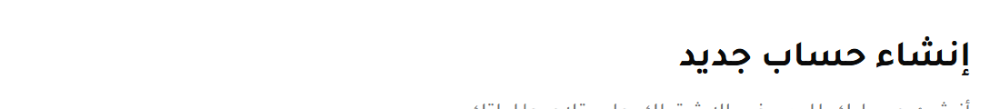
Without the skill the page never loaded an Arabic font, so Chromium drew the heading in Segoe UI, the Windows fallback; on a phone it would be a different font again. With the skill it is drawn in the font the page loaded (Tajawal). Measured from the font Chromium actually used for the Arabic glyphs.
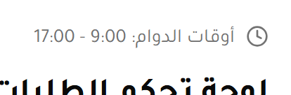
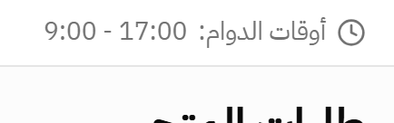
After أوقات الدوام: the range runs right to left with the sentence, so 9:00
sits on the right and an Arabic reader reads "from 9 to 17". v0.5 rule 3 told agents to isolate ranges written in
digits, which puts 9:00 on the left and reads backwards. A native reader flagged this pair. v0.7 leaves
every range, of times, dates or numbers, in the sentence's flow, the same ruling as من 15-25 يناير.
Two of four Haiku skill runs on t7 did this; two baseline runs did it on their own.
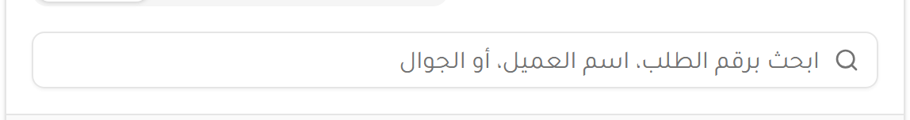
Rule 5 of v0.5 told agents to give a general field that may receive a phone number automatic direction. An automatic-direction field is left-to-right while it is empty, so its Arabic placeholder is laid out left-to-right. Three of four t7 skill runs did this. v0.7 adds the fix: keep the field right-to-left while it is empty. The fix is verified in Chromium, Firefox and WebKit (below) but has not been re-run with agents.
Five of the seven came from two of the skill's own rules. Both rules are corrected in v0.7; the corrections are checked in the lab and against the native-reader rulings, but have not been re-run with agents.
| Run | Defect | Cause |
|---|---|---|
| t7 · Haiku ×2, Sonnet ×1 | Arabic search placeholder laid out left-to-right. One of the Haiku runs also left its order-status labels left-to-right. | Skill rule 5 itself (automatic direction on an empty field). The status labels: the agent set the kit's direction on the tabs but not on the status dropdown. |
| t7 · Haiku ×2 | Opening-hours range forced left-to-right | Skill rule 3 itself told agents to isolate ranges written in digits. |
| t6 · Haiku | Arabic drawn in the system fallback font | The agent loaded the font with an import placed where the browser ignores it. |
| t5 · Haiku | Typed city name runs under the search icon | Icon placed on the right without the matching inset on that side. |
No rule in the skill was written from opinion. Each one traces to a defect measured in one of these places, and to a mechanism checked in the three browser engines:
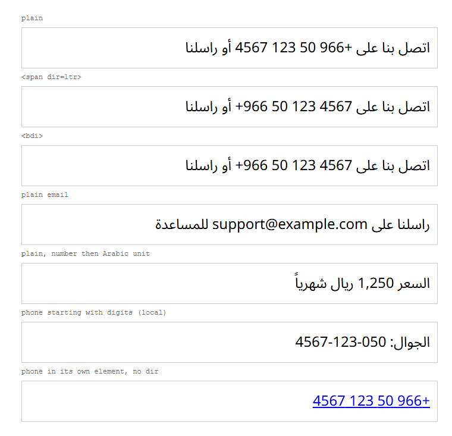
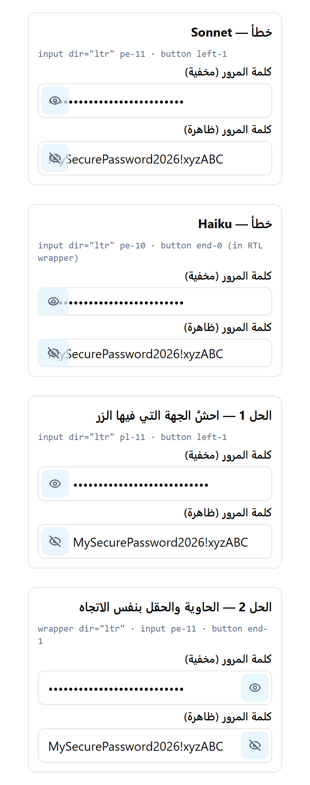
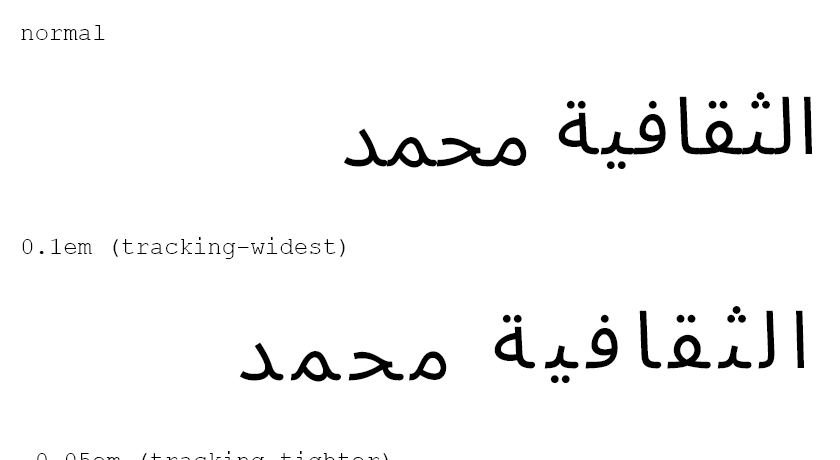
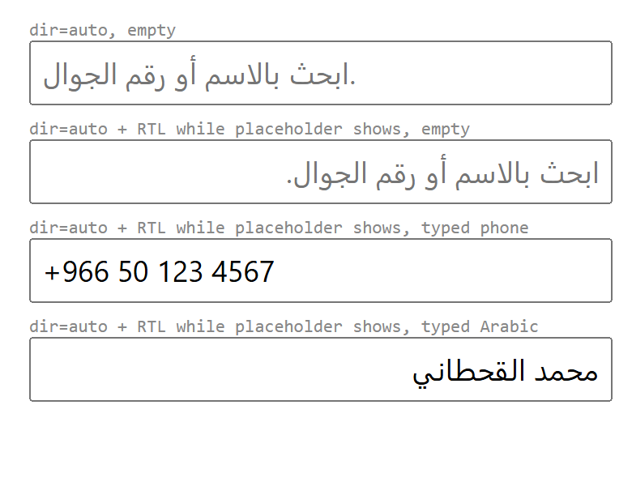
For Haiku and Sonnet doing everyday Arabic UI work, the skill cuts measured RTL defects from 29 to 7 and raises fully clean results from 8 of 24 runs to 19 of 24. It helps most on new screens with forms and data (sign-up forms, dashboards) and on converting existing apps. It adds nothing to fixing an already-Arabic site, which both models did well alone. Two of its rules caused five of the remaining seven defects; v0.7 corrects both, and that correction is the next thing to test with agents.